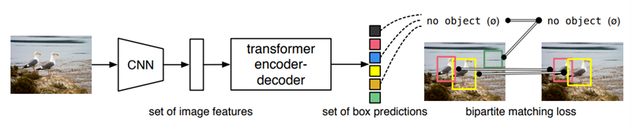

오랜만에 다시 공부하게 된 딥러닝의 세계는 듣던대로 정말 모든 분야를 transformer가 장악하고 있었다. 회사에서 새로 만드려는 fusion module에 사용할 수 있는 유용한 것들이 있나 survey를 하다가 detr계열의 논문들에 다들 관심이 있어해서 이걸로 다시 공부를 시작해 보려고 한다.
해당 논문들의 변천사를 정리해보자면 이렇다.
DETR: single image 기반인 2D positional embedding을 한 2D object detection
DETR3D: multi-view image + object query로 reference point를 뽑아서 image에 projection하는 트릭을 사용한 3D object detection
PETR: DETR3D의 reference point를 사용하지 않고 camera view와 일치하는 부분에 3D space상에서구한 3D positional embedding을 가져와서 바로 사용함.
PETRv2: PETR에 이전 frame의 image도 사용 + 3D PE에 image feature를 추가로 활용하여 보다 robust한 결과를 얻고자 한 것
DETR
paper: [2005.12872] End-to-End Object Detection with Transformers (arxiv.org)

DETR은 기존의 bounding box regression + classification으로 나누고 중간중간에 hand-designed component를 사용한 object detection 문제를 transformer의 self-attention을 이용해 set prediction problem으로 간소하게 바꿔서 해결하였다. DETR은 transformer의 non-local computation을 통해서 large object에 대해서는 보다 좋은 성능을 보였지만 작은 object에 대해서 성능이 안 좋아서 앞으로 보완해야할 문제라고 했다.
DETR Model
Object detection set prediction loss
DETR는 N개의 fixed-size set을 prediction한다. 여기서 이 N은 image 안에 있는 object를 여러개 추정하기 위해서 정한 숫자이므로 이미지상에서 존재할 수 있는 object의 수 보다 커야한다. Ground truth의 경우 object의 수 보다 N이 더 크다면 $\emptyset$으로 padding한다. Training을 할 때 가장 어려웠던 부분이 ground truth에 대해 predicted object의 score를 class, position, size에 따라 매기는 것이었다고 한다. DETR에서의 loss는 ground truth object와 predicted object 사이에 optimal bipartite matching을 구하고 여기서의 object-specific loss가 optimize되도록 학습된다.
\[\hat\sigma=argmin_{\sigma\in\mathfrak{G}}\sum_{i}^N\mathcal{L}_{match}(y_i,\hat y_{\sigma(i)})\\ \mathcal{L}_{match}(y_i,\hat y_{\sigma(i)})=-\mathbf{1}_{\{c_i\neq\emptyset\}}\hat p_{\sigma(i)}(c_i)+\mathbf{1}_{\{c_i\neq\emptyset\}}\mathcal{L}_\mathrm{box}(b_i,\hat b_{\sigma(i)})\]우선 optimial bipartite matching을 구하기 위해서 위의 식을 통해 optimal permutation index set인 $\hat\sigma$를 구한다. bbox와 label이 일치할수록 $\mathcal{L}_{match}$의 값이 작아지고 이 값의 합이 최소가 되는 permutation을 구하는 것이다. 이 과정은 modern detector들에서 ground truth object에 대해 match proposal이나 anchor와 같은 heuristic assignmet rule을 사용한 것 과 같다.
그 다음에는 이전에 계산한 모든 pair에 대해서 hungarian loss를 계산한다.
\[\mathcal{L}_{Hungarian}(y,\hat y)=\sum_{i=1}^{N}[-log\hat p_{\hat\sigma(i)}(c_i)+\mathbf1_{\{c_i\neq\emptyset\}}\mathcal{L}_{box}(b_i,\hat b_{\hat\sigma(i)})]\]실제로 $c_i\neq\emptyset$에 대해서 class imbalance 문제 때문에 log-probabilty term을 1/10으로 down-weight 하였다고 한다. 이 부분은 Faster R-CNN에서 positive/negative proposal을 subsampling으로 balance를 맞추는 부분과 유사하다.
Bounding box loss
matching cost와 hungarian loss의 두번째 텀은 둘다 \(\mathcal{L}_{box}\)인데 많은 detector들이 box prediction을 initial guess를 활용하는 반면 여기서는 직접적으로 prediction을 한다. 이 방법은 구현을 쉽게 해주지만 loss의 scale 문제가 있는데 아래와 같이 IoU loss와 L1 loss의 linear combination으로 loss를 정의하여 L1 loss의 scale문제를 좀 완화시켰다. $\lambda_{iou},\lambda_{L1}$은 hyperparameter이다.
\[\mathcal{L}_{box}(b_i,\hat b_{\sigma(i)})=\lambda_{iou}\mathcal{L}_{iou}(b_i,\hat b_{\sigma(i)})+\lambda_{L1}\Vert b_i-\hat b_{\sigma(i)}\Vert_1\]DETR architecture

DETR의 구조는 크게 3개의 component로 이뤄져 있다. CNN backbone, Encoder-Decoder transformer, simple Feed Forward Network 이다.
Backbone
CNN backbone(ResNet사용)은 $3\times H_0 \times w_0$의 image를 input으로 받아 $2048\times \frac{H_0}{32}\times \frac{W_0}{32}$의 activation map을 output으로 내보낸다.

Transformer encoder
먼저 $1\times1$ convolution으로 channel dimension을 $d$로 줄이고 encoder가 sequence를 input으로 받기 때문에 feature map의 spatial dimension을 1 dimension으로 펼친다. 그 결과로 $d\times HW$의 feature map이 나온다. 각각의 encoder layer는 standard architecture를 가지고 multi-head self-attention 모듈과 feed forward network로 구성되어 있다. Transformer architecture는 permutation-invariant 하기 때문에 각 attention layer마다 fixed positional encoding도 같이 해주었다.
Transformer decoder
Decoder 또한 transformer의 standard architecture를 따르며 d size의 N개의 embedding 변환한다. Original tranformer와의 차이는 N개의 object를 각 decoder layer에서 parallel하게 decode 한다는 것이다. Decoder 또한 permutation-invariant 하기 때문에 N input embedding이 서로 달라야만 다른 결과를 나타낼 수 있다. 이 input embedding은 학습된 positional encoding이며 이를 object query라고 부른다. 이 object query를 attention layer의 input에 더한다.
Prediction feed-forward networks (FFN)
최종 prediction은 3-layer perceptron으로 이뤄져 있고 activation function으로는 ReLU를 사용했다. FFN은 normalized center coordinate, height, width와 class label을 예측한다. 우리가 N개의 bounding box를 예측하고 보통 이 N이 이미지 상의 object수 보다 크도록 잡기 때문에 object가 잡히지 않은 box를 empty set으로 두도록 special class가 추가로 사용 되었다. 이 class는 기존의 object detection에서 “background”와 유사한 역할을 한다.
Auxiliary decoding losses
Training 과정 중 decoder에 추가로 auxiliary losses를 사용하면 model이 각 class마다 제대로 된 수의 object를 output으로 내보내는데에 도움이 된다. 이를 위해 각각의 decoder 뒤에 서로의 paramter를 공유하는 FFN prediction과 hungarian loss를 추가 하였다고 한다. 여기에 다른 decoder layer의 prediction FFN에 대한 입력을 normalize하기 위해 추가적으로 shared layer-norm을 사용했다.
Code Review
facebookresearch/detr: End-to-End Object Detection with Transformers (github.com) 을 참고하여 코드를 같이 살펴 보았다.
전체 모델은 models/detr.py 에 있는 build 함수에서 정의되는데 argument를 받아서 처음에 model을 build하고 시작한다. backbone의 경우 resnet50을 default로 사용했고 transformer의 경우 standard transformer architecture를 사용한 것이 맞다. Object query의 경우 100개를 사용 했으며
가장 중요한 decoder part를 위주로 보자면
- Multi-Head Self-Attention
1
2
tgt2 = self.self_attn(q, k, value=tgt, attn_mask=tgt_mask,
key_padding_mask=tgt_key_padding_mask)[0]
- Multi-Head Attention
1
2
3
4
tgt2 = self.multihead_attn(query=self.with_pos_embed(tgt, query_pos),
key=self.with_pos_embed(memory, pos),
value=memory, attn_mask=memory_mask,
key_padding_mask=memory_key_padding_mask)[0]
이렇게 크게 두가지 attention layer로 구성되어 있는데 첫번째는 self attention이라는 이름에 맞게 zero initialized된 object query에 positional embedding을 한 값과 원래 값을 self-attention을 한번 해줌으로써 서로 다른 object를 잘 찾도록 query를 한번 학습하는 역할을 하는 것으로 보인다.
그 후에 Multi-Head Attention에서 진짜로 object query와 encode output, positional encoding을 사용해 attention을 하여 각각의 query가 관심있어 하는 object의 위치를 찾는 역할을 한다.
그 외의 나머지 부분은 크게 읽으면서 헷갈린다거나 그랬던 부분이 없어서 넘어가려고 한다.
DETR3D
paper: [2110.06922] DETR3D: 3D Object Detection from Multi-view Images via 3D-to-2D Queries (arxiv.org)
DETR3D는 기존의 image 상에서 직접 3D bounding box를 찾거나 depth prediction을 하던 방식들과 다르게 3D space 상에서 바로 3D bounding box를 찾는 방식을 제안한다.
이 논문의 main contribution은 다음과 같다.
- 최초의 3D set-to-set prediction으로 multi-camera detection을 하여 3D object detection 과정을 간소화 하였다.
- Backward geometric projection 모듈을 도입하여 2D feature extraction과 3D bounding box preditcion을 정확하게 연결지어 3D information을 관련된 모든 frame에서 사용할 수 있도록 하였다.
- NMS같은 추가적인 post-processing이 필요가 없으며 camera overlap region에서 다른 모델들에 비해 큰 성능 향상을 보였다.
Multi-view 3D Object Detection

DETR 3D는 3개의 핵심 component로 이뤄져 있는데 shared ResNet으로 camera image들에서 feature를 추출하는 backbone, geometry-aware manner에서 2D feature와 3D bounding box set을 연결하는 detection head, 이 부분이 논문의 main contribution이라고 주장한다. Detection head의 각 layer는 data로 부터 학습된 object query로 부터 시작하고 각 object query는 3D location의 정보를 담고 있는데 이는 나중에 camera plane에 project 되어 bilinear interpolation을 통해 image feature를 가져오는데에 사용된다. DETR과 유사하게 multi-head attention을 사용해 object들의 interaction 정보를 모두 합쳐서 object query를 refinement한다. 이 layer를 여러번 거치면서 feature sampling과 object query refinement 과정이 반복된다. 마지막으로 set-to-set loss를 사용하여 network를 학습한다.
Feature Learning
Input으로는 K개의 image와 camera matrix$(3\times4)$를 사용하며 bounding box의 position, size, heading angle, BEV상의 velocity, class label을 추정하도록 학습한다. 각 image들은 ResNet과 FPN을 사용하여 4개의 feature set으로 변환되며 각 feature set은 이미지들은 feature level과 관련이 있다. Multi-scale feature를 통해서 다양한 크기의 object를 인식할 수 있도록 하였다.
Detection Head
기존의 bottom-up 방법들은 각 이미지에서 detection 결과로 나온 bounding box들을 redundant를 제거하고 통합하는 방식으로 multi-camera image를 처리했는데 여기엔 크게 두 가지 문제가 있다고 한다. 첫 번째는 dense bounding box prediction은 정확한 depth estimation이 필요한데 이 자체가 매우 challenging한 문제이며 두 번째는 NMS 기반 redundancy 제거 및 통합 방식이 non-parallelizable해서 inference에 큰 overhead가 생긴다고 한다. 이 논문에서는 이 문제들을 top-down 방식으로 해결 했다고 한다.
DETR 3D는 iterative하며 2D feature map에서 bounding box를 estimate하는 set-based computation을 하는 layer를 L개 사용한다. 각 layer는 다음과 같은 step을 따른다
- object query들과 관련된 bonunding box set의 center를 predict한다.
- 이 center들을 camera transformation matrix들을 사용해 모든 feature map에 projection 한다.
- bilinear interpolation을 사용해 feature들을 가져와 object query에 합친다.
- multi-head attention을 사용해 object interation을 계산한다.
DETR에서 아이디어를 얻어 각 layer $l\in{0,…,L-1}$는 object query\(\mathcal{Q}_l=\{q_{l1},...,q_{lM*}\}\subset\mathbb{R}^C\)를 통해 작동하며 새로운 set \(\mathcal{Q}_{l+1}\)을 생성해 낸다. Object query $q_{li}$로부터 predict된 center point(reference point) $c_{li}\in\mathbb{R}^3$는 다음과 같다.
\[c_{li}=\Phi^{ref}(q_{li})\]$\Phi^{ref}$는 neural network이다. 그 다음 최종 bounding box를 refine하고 predict하기 위해 $c_{li}$와 관련있는 image feature를 가져오기 위해 camera transformation matrix를 가지고 각 image들에 projection 한다.
\[c_{li}^*=c_{li}\oplus1 \qquad c_{lmi}=T_mc_{li}^*\]$\oplus$는 concatenation, $c_{lmi}$는 m번째 camera에 project된 point를 의미한다. Feature map의 크기에 의한 영향을 없애기 위해 $c_{lmi}$를 $[-1,1]$로 normalize한다. 그 후에 image feature는 다음과 같은 값으로 collect 된다.
\[f_{lkmi}=f^{bilinear}(\mathcal{F}_{km},c_{lmi})\]$f_{lkmi}$는 l번째 layer에서 얻은 i번째 point의 m번째 camera의 image에서 얻은 k번째 level feature이다. 주어진 point가 모든 camera의 image에서 보일 수 없는 경우도 있기에 invalid point를 filtering하기 위해 heuristic 정보가 필요한데 이를 위해서 binary value $\sigma_{lkmi}$를 정의하였다. 직관적으로 point가 valid하면 1, invalid면 0이 부여될 것임을 알 수 있다. 그래서 최종 feature $f_{li}$와 다음 layer의 object query $q_{(l+1)i}$은 다음과 같이 계산된다.
\[f_{li}=\frac{1}{\sum_k\sum_m\sigma_{lkmi}+\epsilon}\sum_k\sum_mf_{lkmi}\sigma_{lkmi}\quad and \quad q_{(l+1)i}=f_{li}+q_{li}\]$\epsilon$은 0으로 나뉘는 것을 방지하기 위한 값이다. 결과적으로 각 object query $q_{li}$에 대해서 $\Phi^{reg}l, \Phi^{cls}$를 거쳐서 bounding box $\hat b{li}$와 label $\hat c_{li}$을 predict 한다.
\[\hat b_{li}=\Phi^{reg}_l(q_{li})\quad and \quad \hat c_{li}=\Phi^{cls}_l(q_{li})\]Loss
loss는 DETR에서 사용한 loss와 같다.
총평
DETR 3D라는 이름답게 object query를 3D버전으로 뽑는 컨셉의 논문이었다. 주목할만한 점은 object query과 관련된 image의 feature를 object query에 계속 더해주면서 더 object query를 정확하게 뽑고자 하는 부분인데 결과를 보니 생각보다 이게 효과가 있어 보였다.
PETR
paper: [2203.05625] PETR: Position Embedding Transformation for Multi-View 3D Object Detection (arxiv.org)

PETR은 3D coordinate의 position information을 image feature안에 embed하여 3D position aware feature를 생성해서 object query가 3D position-aware feature를 사용하여 더 좋은 성능을 보이도록 한 논문이다. 이 논문에서는 DETR3D에 3가지 문제점이 있다고 주장하는데 reference point가 정확하지 않은 점, projected 된 point의 feature만 수집되면서 global view의 representaion을 학습하지 못하는 점, 복잡한 sampling 절차가 실제로 사용하기에 어려운 점을 문제점으로 꼽았다.
이 논문의 main contribution은 다음과 같다.
- 3D coordinate를 인코딩하여 multiview-feature를 3D domain으로 변환하고 object query들이 3D position-aware feature와 interaction을 하면서 update가 되는 새로운 multi-view 3D object detection framework인 PETR을 제안했다.
- Simple implicit function을 통해 3D position 정보를 2D multi-view feature에 인코딩 하여 3D position-aware feature를 생성하였고 이러한 representation이 3D object detection에 최초로 사용 했다고 한다.
Method

우선 전체적인 구조를 설명하면 input으로 N view의 image를 받아 각각 ResNet을 거쳐 image 마다 2D feature를 뽑는다. 3D coordinate generator에서는 camera frustum space를 3D meshgrid로 discretize하고 이 meshgrid를 camera parameter를 이용해 3D world space로 transform한다. 이 3D coordinate와 2D multi-view feature가 3D position encoder의 input으로 들어가 output으로 3D position-aware feature를 내보내게 된다. 이 3D position-aware feature는 query generator로 부터 생성된 object query와 interact 하며 transformer decoder로 들어가게 된다. 그 결과로 나온 값 들은 object의 class와 3D bounding box를 predict하는데 사용된다.
3D Coordinates Generator
2D image들과 3D space 사이의 관계를 구하기 위해서 camera frustum space의 point를 3D space로 변환해야 한다. camera frustum space의 point와 3D space의 point가 1대1 대응이기 때문에 각 camera frustum space의 point가 3D space상에서 어디에 위치하는 point인지를 아래와 같이 3D projection을 거꾸로 함으로써 계산할 수 있다.
\[p^{3d}_{i,j}=K_i^{-1}p_j^m\]$K_i\in R^{4\times4}$는 i번째 view의 3D world→camera frustum space로의 변환이다. 그리고 아래 식과 같이 3D coordinate를 normalize를 추가로 해준다.
\[\begin{cases}x_{i,j}=(x_{i,j}-x_{min})/(x_{max}-x_{min}) \\ y_{i,j}=(y_{i,j}-y_{min})/(y_{max}-y_{min}) \\ z_{i,j}=(z_{i,j}-z_{min})/(z_{max}-z_{min}) \end{cases}\]여기서 min, max값들은 3D world space 상에서의 RoI이다. 근데 여기서 이 3D coordinate tensor를 3D position encode의 input으로 넣어줄 때 transpose를 한다고만 써있는데 갑자기 depth에 4가 그림에서나 식에서 곱해져있다 왜 그런지를 찾아봤는데 논문에는 나와 있지 않고 코드를 봐야 알 수가 있었다. 코드(mmdet3d_plugin/models/dense_heads/petr_head.py의 position_embedding function)를 보고 이해한 바로는 단순히 3D coordinate에 대한 placeholder 개념으로 정의하는게 아니라 각 image의 모든 pixel로 부터 3D coordinate상의 pseudo lidar point를 생성하고 $H\times W\times D$형태의 voxel 안에 point를 부여하는 식이라 image pixel을 pseudo lidar point로 변환 했을때의 homogeneous coordinate상의 좌표 $[x,y,z,1]$가 각 voxel의 값으로 들어가서 input tensor의 크기는 $H\times W\times (D\times4)$가 된다.
3D Position Encoder

3D position encoder의 목적은 3D position information과 2D image feature를 associate하여 3D feature를 얻는 것이다. MetaSR과 유사하게 3D position encoder는 다음과 같은 식으로 나타낼 수 있다.
\[F_i^{3d}=\psi(F_i^{2d},P_i^{3d}),\quad i=1,2,...,N\]여기서 $\psi$는 position encoding function이다. 우선 3D coordinate가 MLP를 거쳐 3D position embedding으로 변환되고 2D feature가 $1\times1$ convolution layer를 거친 후 3D PE에 대해져서 3D position-aware feature가 만들어 진다. 그 후 transformer decoder의 key component로 사용하기 위해서 이 feature를 편다.
- Analysis on 3D PE

3D PE의 효과를 증명하기 위해 front view에서 3개의 PE를 무작위로 선택하고 이 3개의 PE와 모든 multi-view PE 사이의 similarity를 구했는데 위와 같은 그림이 나왔다. 실제로 3D PE가 3D space 상에서 서로 다른 view에서의 position들의 상관관계를 내포하고 있다.
Query Generator and Decoder
Query Generator
3D scene은 워낙 search space가 넓고 sparse하다 보니 수렴이 어려워서 이를 완화하기 위해서 3D world space에 학습 가능한 anchor point들을 uniform distribution$[0,1]$로 initialize 하였다. 그리고 이 anchor point들을 small MLP를 통과시켜서 initial object query $Q_0$를 생성한다. 실제로 3D space에서 anchor point를 사용하는 것은 PETR의 수렴성을 보장할 수 있다. 이 anchor point의 효과는 실험을 통해서 알아냈다고 한다.
Decoder
Decoder는 DETR과 같이 standard transformer decoder를 L개의 layer로 사용하였다. Decoder layer에서의 interaction은 다음과 같이 식으로 나타낼 수 있다.
\[Q_l=\Omega_l(F^{3d},Q_{l-1})\]각 layer마다 object query는 multi-head attention과 FFN을 통해 3D position-aware feature와 interact하고 여러 iteration을 거치고 난 후에 update된 object query는 corresponding object를 predict 할 수 있는 만큼 high-level repersentation을 갖게 된다.
Head and Loss
DETR3D와 유사한 loss를 사용한다. 다만 regression에서 predict하는 값은 anchor points에 대한 relative offset이다.
총평
DETR3D에서 reference point를 object query로부터 predict한다는 점이 reference point를 정확하게 뽑기 어려울 것 같은 생각이 들어 매우 미심 쩍었는데 이 논문에서도 마찬가지로 비슷한 생각을 가지고 이를 해결하려고 했다. 실제로 positional embedding이 제대로 효과가 있는 것인 실험 결과도 있어서 이 방식의 positional embedding은 믿어도 될 것 같아 보인다.
PETRv2
paper: [2206.01256] PETRv2: A Unified Framework for 3D Perception from Multi-Camera Images (arxiv.org)
PETRv2는 PETR에서 이전 frame의 temporal 정보를 사용하여 3D object detection 성능을 향상 시켰다고 했다. 3D PE가 다른 frame의 object의 position을 temporal alignment 해주고 추가적으로 feature-guided position encoder를 사용하여 3D PE의 data adaptability를 증가시켰다고 한다. 여기에 추가적으로 segmentation patch를 query로 추가하여 BEV map상에서의 segmentation task에도 적용했다고 한다.
이 논문의 main contribution은 다음과 같다.
- position embedding의 개념을 temporal representation learning으로 확장하였고 temporal alignment를 3D PE에서의 pose transformation을 이용해 맞췄다고 한다. 여기에 feature guided position encoder를 추가하여 3D PE를 2D image feature를 사용하여 reweight 했다고 한다.
- BEV segmentation task를 PETR framework에 추가하였고 좋은 성능을 보였다고 한다.
Method

전체적인 framework은 다음과 같다. PERT처럼 3D coordinate와 2D image feature를 뽑고 $t-1$ frame에서의 3D coordinate를 pose transformation(A)을 사용해 현재 frame $t$로 변환하고 인접한 frame들의 2D feature과 3D coordinate는 각각 concatenated(C)되고 feautre-guided position encoder(FPE)의 input으로 들어간다. 그리고 FPE는 transformer decoder에 들어가는 key와 value를 생성한다. 그 후에 detection query와 segmentation query를 각각 PETR논문에서 언급된 learnable 3D anchor point와 fixed BEV point로 initialize하여 transformer decoder에 들어가 multi-view image feature와 interaction하여 final prediction 결과를 내보낸다.
Temporal Modeling
여기서는 3D PE를 temporal modeling으로 확장하기 위한 3D coordinate alignment와 FPE에 대한 부분으로 나눠서 설명한다.
3D Coordinates Alignment

frame $t$에서의 camera coordinate를 $c(t)$, lidar coorinate를 $l(t)$, ego coordinate를 $e(t)$라고 하고 global coordinate를 $g$라 하자. 여기서 $l(t)$를 default 3D space로 삼으면 i번째 camera에서 project된 3D point $P_i^{l(t)}(t)$는 다음과 같이 나타낼 수 있다.
\[P_i^{l(t)}(t)=T_{c_i(t)}^{l(t)}K_i^{-1}P^m(t)\]여기서 $P^m(t)$는 camera frustum space의 meshgrid의 point set이고 $K_i\in R^{4\times4}$는 intrinsic matrix이다. $t-1$의 3D point들의 coordinate를 $t$로 변환하면 다음과 같다.
\[P^{l(t)}_i(t-1)=T_{l(t-1)}^{l(t)}P_i^{l(t-1)}(t-1) \\ T^{l(t)}_{l(t-1)}=T^{l(t)}_{e(t)}T^{e(t)}_g{T^{e(t-1)}_g}^{-1}{T^{l(t-1)}_{e(t-1)}}^{-1}\]이렇게 align된 point set $[P_i^{l(t)}(t-1), P_i^{l(t)}(t)]$을 3D position embedding을 생성하는데 사용한다.
Feature-guided Position Encoder

PETR에서는 3D coordinate를 3D PE로 변환하는데 그 식은 아래와 같다.
\[PE_i^{3d}=\psi(P_i^{l(t)}(t))\]$\psi$는 small MLP이고 식에서 처럼 PETR에서의 3D PE는 input image와 무관하다. 그러나 여기서 저자들은 image feature가 depth와 같은 유의미한 가이던스를 주기 때문에 3D PE가 2D feature로부터 만들어져야 한다고 주장 했고 그래서 vision prior를 사용한 feature-guided position encoder를 제안하였다. 그 식은 아래와 같다.
\[PE_i^{3d}(t)=\xi(F_i(t))*\psi(P_i^{l(t)}(t))\]$\xi$도 small MLP, $F_i(t)$는 i번째 camera의 image feature이다. 위의 그림처럼 2D feature는 $1\times1$convolution으로 project된 후 MLP $\xi$을 거치고 3D coordinates는 MLP $\psi$를 거쳐서 attention weight을 내보내게 되고 마지막에 이 weight끼리 곱해져서 3D PE를 생성하게 된다. 이 3D PE에 2D feature가 더해져서 transformer decoder의 key값이 되고 projected 2D feature는 value 값이 된다.


BEV segmentation

BEV segmentation에서 PETR에 seg query를 추가하였는데 BEV map은 위의 그림처럼 small patch들로 나눌 수 있는데 이 patch들의 label을 직접 predict하는 식으로 segmentation head를 설계하였다. 위의 그림처럼 seg query들은 BEV space상에서 고정된 위치의 anchor point로 부터 initialize되고 MLP를 거쳐 학습된 seg query들을 생성한다. 이 seg query는 transformer decoder의 input으로 들어가 image feature와 interaction을 한 후에 segmentation head를 거쳐 BEV patch의 각 pixel들의 label을 predict 한다. segmantation loss는 cross-entropy loss를 사용하였다.
\[l_{seg}=\frac{1}{N}\sum_{j=0}^C\sum_{i=0}^Nw\hat{y}_ilog(y_i)+(1-\hat{y}_i)log(l-y_i)\]$N$는 ground truth에 존재하는 pixel 개수이고 $C$는 object category의 수 이다.
Robust Analysis
PETRv2에서는 safety와 reliability를 위해 sensor error와 system bias에 대한 robustness를 평가해야 한다고 생각해서 다양한 조건에서 실험을 해야한다고 했는데 여기서 예시로 든 대표적인 3가지 sensor error는 아래와 같다. 나중에 개발할 때 이 부분을 참고해서 같이 실험을 하면 좋을 것 같다.

- Extrinsic noises: extrinsic calibration 값의 부정확함
- Camera miss: camera의 break down이나 occlusion에 의해서 multi-view setting 중 특정 camera를 사용 할 수 없는 상태
- Camera time delay: 야간과 같은 상황에서 camera 노출시간이 길어지는 것에 의한 time delay
총평

사실 읽으면서 PETR에서 성능을 조금이라도 향상 시키려고 온갖 기교들을 때려박고 segmentation task정도를 추가했다 정도라는 생각이 들었다. 위의 결과에서 볼 수 있듯이 CA랑 FPE 둘 다 효과가 있긴 했다.